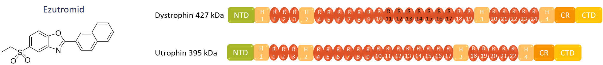

Research
Phenotypic drug discovery is seeing a resurgence in popularity but its main disadvantage is that the drug target is unknown which leads to a blind medicinal chemistry campaign and difficulties monitoring clinical success. Thus, target deconvolution
is of increasing significance as a means of improving attrition in the drug discovery process. My PhD research has aimed to identify the targets of the small molecule ezutromid for the treatment of Duchenne muscular dystrophy (DMD). DMD is an X-linked muscle wasting disease which affects about 1 in 5000 boys. DMD leads to loss of ambulation and reduction of average life expectancy to the late 20s, and there is currently no cure. It is caused by loss of dystrophin
protein, from one of hundreds of different dystrophin gene mutations.

One therapeutic strategy aims to increase levels of utrophin, a natural paralogue of dystrophin. Increasing utrophin rescues the dystrophic phenotype in disease model mice and offers a potential therapy which is independent of
DMD patient mutation type. Ezutromid is a utrophin modulator, discovered by phenotypic screening, and progressed to a Phase 2 clinical trial in DMD patients (Summit Therapeutics plc). Interim 24-week data excitingly demonstrated reduced muscle
fibre damage and increased levels of utrophin, providing the first evidence of ezutromid target engagement and proof of mechanism. However, these effects were not seen after the full 48 weeks of the trial. My work aimed to define the mechanism
of ezutromid in order to help understand the trial results, and to aid development of new generations of utrophin modulators. Using chemical proteomics and phenotypic profiling I showed that the aryl hydrocarbon receptor (AhR) is a target of ezutromid. Furthermore, other reported AhR antagonists also upregulate utrophin, showing that this pathway, which is currently being explored in other clinical applications including oncology and rheumatoid arthritis, could also be exploited in future DMD therapies.
